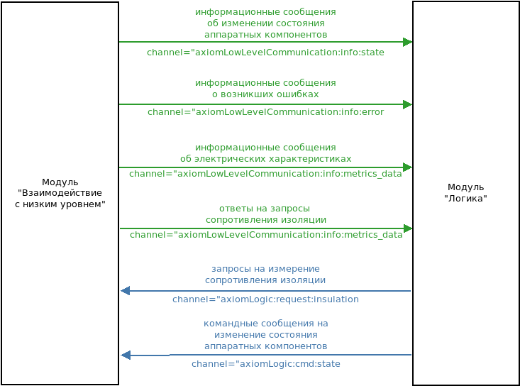
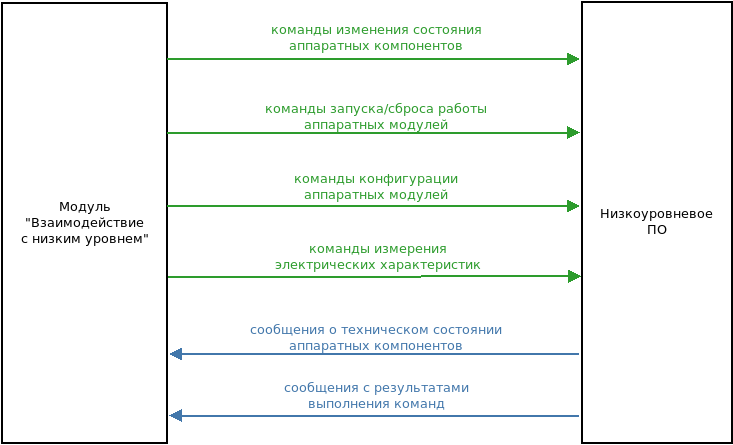

Функциональный модуль «Взаимодействие с низким уровнем» является компонентом серверной части высокоуровневого ПО системы управления и автоматизации Axiom (далее - система), который служит интерфейсом взаимодействия с низкоуровневым ПО системы для функционального модуля «Логика», а также осуществляет инициализацию и контроль работы низкоуровневого ПО.
Содержание
Назначение¶
Функциональный модуль «Взаимодействие с низким уровнем» предназначен для:
Прием команд и запросов от модуля «Логика» на изменение состояния аппаратных компонентов.
Отправка на низкоуровневое ПО команд на изменение состояния аппаратных компонентов.
Отправка на низкоуровневое ПО запросов на измерение электрических характеристик аппаратных компонентов.
Отправка на низкоуровневое ПО команд на запуск и конфигурацию.
Прием от низкоуровневого ПО сообщений с информацией о текущем техническом состоянии аппаратных модулей системы.
Прием от низкоуровневого ПО сообщений о результатах выполнения команд.
Контроль исполнения отправленных на низкоуровневое ПО команд.
Отправка на функциональный модуль «Логика» сообщений с текущим состоянием аппаратных компонентов при его изменении.
Отправка на функциональный модуль «Логика» сообщений с показателями электрических характеристик аппаратных модулей.
Отправка на функциональный модуль «Логика» сообщений об ошибках.
Запись в лог сообщений о полученных от функционального модуля «Логика» командах.
Запись в лог сообщений об изменении состояния аппаратных компонентов.
Запись в лог сообщений об ошибках.
Информационное взаимодействие¶
Взаимодействие с функциональным модулем «Логик໶
Информационное взаимодействие модуля «Логика» с модулем «Взаимодействие с низким уровнем» реализуется посредством передачи сообщений с использованием механизма обмена сообщениями, предоставляемого нереляционной базой данных Redis, основывающемся на паттерне «издатель-подписчик» («pubsub»). Модуль «Логика» является издателем командных сообщений и подписчиком на информационные сообщения. Модуль «Взаимодействие с низким уровнем» является издателем информационных сообщений и подписчиком на командные сообщения.
Схема взаимодействия между модулями¶
Командные и информационные сообщения изменения состояния выходов силовых модулей¶
Командные сообщения от модуля «Логика» передаются в канале
axiomLogic:cmd:state. Информационные сообщения от модуля «Взаимодействие с низким уровнем» передаются в каналеaxiomLowLevelCommunication:info:state.Командные и информационные сообщения изменения состояния аппаратных компонентов представляют собой JSON структуру следующего вида:
{ 'addr': <адрес канала силового модуля>, 'state': <состояние канала силового модуля> }где
<адрес канала силового модуля>- уникальный идентификатор аппаратного компонента системы, который имеет следующий форматch:<адрес силового модуля>:<номер канала>, где
<адрес силового модуля>- уникальный идентификатор силового модуля в системе, который может иметь значения «mx», где x ∈ Z. Адрес аппаратного модуля задается программным обеспечением низкого уровня, установленным на данном модуле;
<номер канала>может иметь значение „1“ или „2“.
<состояние канала силового модуля>- JSON, описывающий состояние канала силового выхода, имеющий формат:{'status': <состояние канала>}, где<состояние канала>может принимать значения „4“, „5“ для командных сообщений и „0“…„7“ - для информационных.
Информационные сообщения об электрический характеристиках¶
Информационные сообщения, содержащие текущие значения электрических характеристик аппаратных модулей, передаются в канале
axiomLowLevelConnection:info:metrics_data. Сообщения представляют собой JSON следующего формата:{ 'Pa1': Pa1, 'Pa2': Pa2, 'Pr1': Pr1, 'Pr2': Pr2, 'I1': I1, 'I2': I2, 'T1': T1, 'T2': T2, 'U': U, 'F': F, 'addr': <адрес силового модуля> }где
Pa1,Pa2- потребляемая активная мощность в первом и втором канале силового модуля соответственно;
Pr1,Pr2- потребляемая реактивная мощность в первом и втором канале силового модуля соответственно;
I1,I2- потребляемый ток в первом и втором канале силового модуля соответственно;
T1,T2- температура первого и второго канала силового модуля соответственно;
U- напряжение электросети на модуле ввода;
F- частота электросети на модуле ввода.
Запросы на измерение сопротивления изоляции¶
Сообщения-запросы на измерение сопротивления изоляции отправляются модулем «Логика» в канал
axiomLogic:request:insulation. Полезной нагрузкой сообщения является сторока с адресом канала силового модуля (см.<адрес канала силового модуля>в разделе «Командные и информационные сообщения изменения состояния выходов силовых модулей»)
Взаимодействие с низкоуровневым ПО¶
Информационное взаимодействие модуля «Взаимодействие с низким уровнем» с низкоуровневым ПО представляет собой обмен строковыми сообщениями, передаваемыми по двунаправленному интерфейсу UART. Подробное описание протокола взаимодействия приведено в отдельном документе.
Схема взаимодействия между модулем и низкоуровневым ПО¶
Развертывание на целевой платформе¶
Описание аппаратной конфигурации системы¶
Для работы функционального модуля «Взаимодействие с низким уровнем» необходим файл с описанием аппаратной конфигурации системы /etc/axiom/settings.json, содержащий JSON следующего вида:
{
'hardware units': {
<адрес модуля ввода>: [
<адрес силового модуля>,
…
],
…
},
'input units': {
<адрес модуля ввода>: <адрес последовательного порта>,
…
},
'power units': {
<адрес силового модуля>: <адрес последовательного порта>,
…
},
'power units thresholds': {
<адрес силового модуля>: [<порог 1>, <порог 2>],
…
}
<адрес модуля ввода> - уникальный идентификатор модуля ввода в системе.
<адрес силового модуля> - уникальный идентификатор силового модуля в системе.
<адрес последовательного порта> - имя последовательного порта в операционной системе целевой платформы.
<порог 1>, <порог 2> - максимальное значение потребляемого тока в кодовых единицах в первом
и втором канале силового модуля соответственно.
Запуск функционального модуля¶
Для запуска функционального модуля «Взаимодействие с низким уровнем» используется скрипт run_LowLevelCommunication.py, размещаемый в главной директории ПО системы:
import signal
import setproctitle
from axiomLowLevelCommunication import hlt
if __name__ == '__main__':
# Имя процесса
setproctitle.setproctitle('axiom low level communication')
# Обработчик сигналов SIGTERM, SIGINT
signal.signal(signal.SIGTERM, hlt.sigterm_handler)
signal.signal(signal.SIGINT, hlt.sigterm_handler)
hlt.run()
Управление запуском функционального модуля¶
Для выполнения ПО системы своего функционального назначения функциональный модуль «Взаимодействие с низким уровнем» должен запускаться при запуске ОС целевой платформы, а также автоматически перезапускаться в случае аварийной остановки. Для выполнения данных требований контроль работы функционального модуля осуществляется с помощью менеджера процессов Supervisor. Добавление программ под управление Supervisor осуществляется путем создания конфигурационных файлов и размещения их в директории /etc/supervisor/conf.d. Конфигурационный файл функционального модуля «Взаимодействие с низким уровнем» axiomLowLevelCommunication.conf должен иметь следующее содержимое:
[program:axiomLowLevelCommunication]
command=python3.4 /home/pi/office/axiomProject/run_LowLevelCommunication.py
process_name=%(program_name)s
autostart=true
autorestart=unexpected
stderr_logfile=None
stdout_logfile=None
priority=1